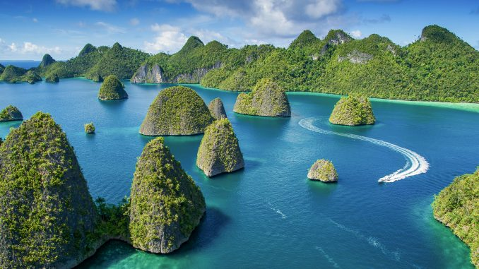
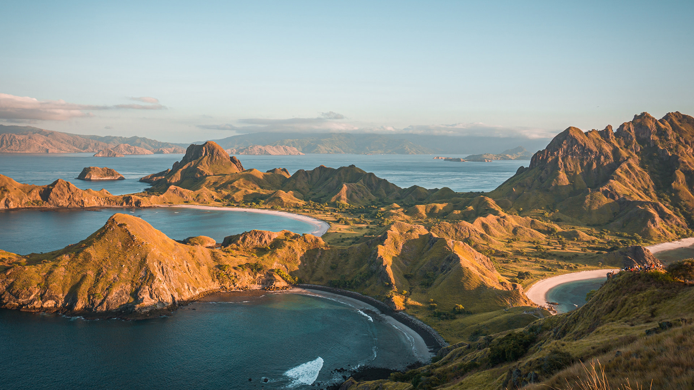
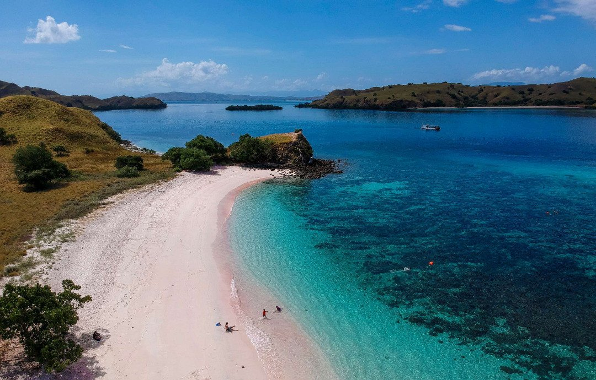

 Kepulauan Raja Ampat adalah gugusan kepulauan yang berlokasi di barat bagian Semenanjung Kepala Burung (Vogelkoop) Pulau Papua. Secara administrasi, gugusan ini berada di bawah Kabupaten Raja Ampat dan Kota Sorong, Provinsi Papua Barat Daya. Kepulauan ini sekarang menjadi tujuan para penyelam yang tertarik akan keindahan pemandangan bawah lautnya. Empat gugusan pulau yang menjadi anggotanya dinamakan menurut empat pulau terbesarnya, yaitu Pulau Waigeo, Pulau Misool, Pulau Salawati, dan Pulau Batanta. Lihat Detail...
 Labuan Bajo merupakan salah satu kelurahan yang berada di kecamatan Komodo, Kabupaten Manggarai Barat, provinsi Nusa Tenggara Timur, Indonesia. Kota Labuan Bajo juga merupakan ibu kota dari kecamatan Kecamatan Komodo dan ibu kota Kabupaten Manggarai Barat. Sedang diwacanakan pengembangan Kota Labuan Bajo. Labuan Bajo telah ditetapkan sebagai destinasi wisata superprioritas di Indonesia. Di Labuan Bajo juga terdapat hutan buatan, yakni Hutan Solohana. Lihat Detail...

Pantai Tangsi atau yang lebih dikenal dengan Pantai Pink dari Pulau Lombok terletak di desa Sekaroh, kecamatan Jerowaru, Kabupaten Lombok Timur adalah sebuah destinasi wisata pantai yang patut untuk dikunjungi karena keunikan pasir pantai yang berwarna pink.
Pantai ini merupakan salah satu dari tujuh pantai di dunia yang memiliki pasir pantai berwarna pink, dan satu dari dua pantai di Indonesia yang memiliki pasir pantai berwarna pink.
Lihat Detail...
Kembali Ke Atas